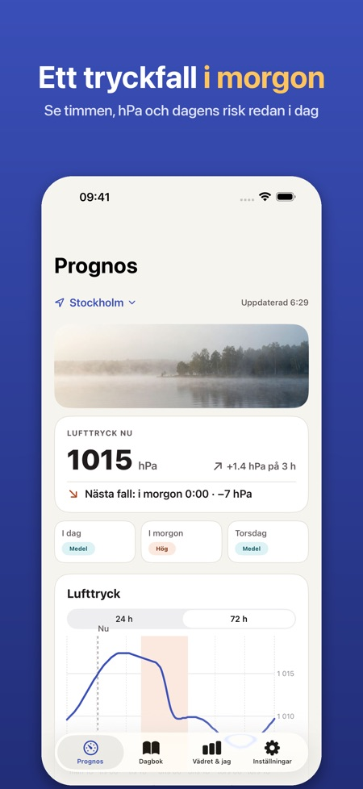
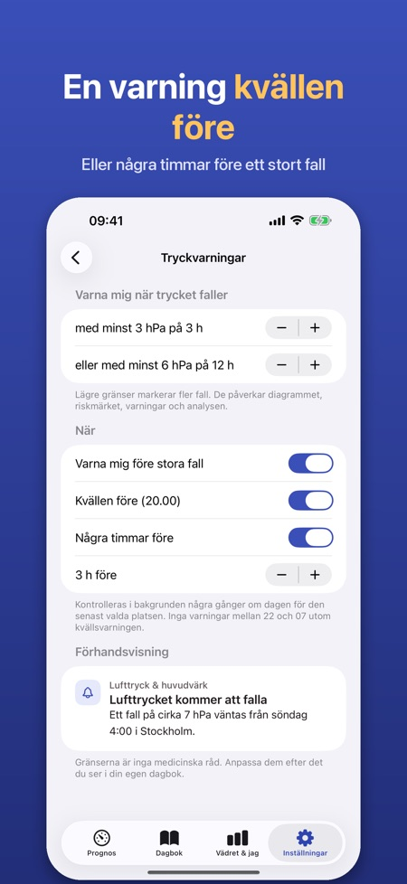
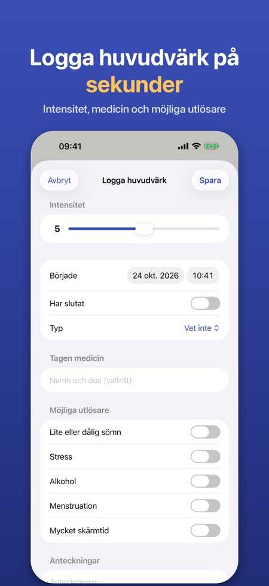

Tryckprognos och dagbok. Höstens stormar ger snabba tryckfall. Se dem komma timme för timme, få en varning kvällen före och logga huvudvärk med ett tryck.



Många upplever huvudvärk eller migrän när lufttrycket faller snabbt. Appen visar lufttrycket timme för timme, markerar de stora fallen och hjälper dig att se om vädret hänger ihop med din huvudvärk.
LUFTTRYCK TIMME FÖR TIMME
• Diagram över lufttrycket för de närmaste 24 timmarna (72 timmar med Pro) för din plats eller en stad du väljer
• Fallzoner markeras: minst 3 hPa på 3 timmar eller 6 hPa på 12 timmar – gränserna kan ändras
• Ett enkelt riskmärke per dag (låg, medel, hög) som bara bygger på tryckförändringen och förklaras i appen
• Luftfuktighet och temperaturförändring visas också
VARNING I FÖRVÄG (PRO)
• Notis kvällen före eller några timmar före ett stort tryckfall
• Appen kontrollerar prognosen i bakgrunden för den senast valda platsen
HUVUDVÄRKSDAGBOK
• Logga med ett tryck, även direkt från en varning: intensitet 0–10, start och slut, typ, medicin och om den hjälpte, anteckningar
• Möjliga utlösare: sömn, stress, alkohol, menstruation, skärmtid
• Månadskalender med tryckfallsdagar, detaljer per anteckning med trycket kring starten och en översikt över utlösarna du loggat
PÅVERKAR VÄDRET MIG? (PRO)
• Efter 30 dagars dagbok jämförs dina huvudvärksdagar med dagens tryckfall: enkla siffror och diagram, ingen medicinsk slutsats
• Läkarrapport: en PDF för de senaste 30 eller 90 dagarna eller en egen period
WIDGET (PRO)
• Lufttrycket nu, trenden och nästa stora fall på hemskärmen eller låsskärmen
PRO
Årsabonnemang eller ett engångsköp för alltid. Utan Pro har du kvar 24-timmarsdiagrammet och dagboken. Inget konto och ingen reklam.
INTEGRITET
Dagboken stannar på din iPhone. Bara anonym användningsstatistik, som du kan stänga av. Väderdata kommer från Apple Väder.
Appen är inte en medicinteknisk produkt och ger inga medicinska råd eller diagnoser. Om din huvudvärk förändras eller är svår, kontakta en läkare.